让支具学会
陪伴，再学会放手。
运动损伤人群的膝关节外骨骼康复系统。

把家里的康复，
变成一件有节奏的事。
让支具「在场」， 替代治疗师必然存在的「缺席」。
A REAL SCENE
术后第十天，
他把支具脱了。
医院
30分钟
诊所康复师能教给他的全部时间，包括术后教育、动作演示、首次练习。
家中
6个月
他要在没有任何专业人员在场的情况下，自己完成所有训练。
痛点
不知道
该停 还是 该继续。
不知道弯到这里算够，不知道今天这组练得对不对——于是他放弃了。
FAILURE MODE
家庭康复最稳定的失败，
不在动作，在见证。
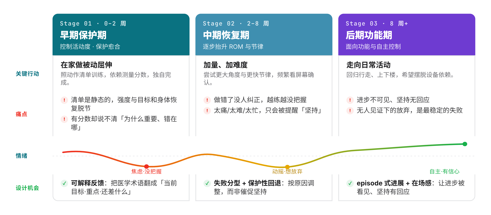
坚持率在术后第 7–10 天开始崩塌——患者开始问「我做这个有意义吗」。 三类痛点指向同一个设计出发点：不会解释、无人见证、缺乏节奏。
CURRENT REALITY · 01
1 : N
一位康复医生，对应数十名居家患者。
医生的眼睛和手，无法跟着患者回家。 门诊半小时讲完动作，剩下的六个月只能靠自觉。
CURRENT REALITY · 02
屏幕，治不好膝盖。
现有康复 App 只给曲线、分数、徽章。
现有 App 在做的事
测量与记录
显示 ROM 曲线、给你训练分数、提醒明天再做一次。
真正缺失的事
解释与陪伴
这条曲线为什么往下走？要不要紧？现在能不能继续？
INDUSTRY WINDOW · REHABILITATION DEVICES (CN)
中国康复医疗器械市场，
2021 → 2026 翻一倍以上。
数据来源：沙利文康复医疗器械市场研究、智研咨询行业报告（2024–2025）。
INDUSTRY WINDOW · EXOSKELETON ROBOTICS
全球智能康复外骨骼机器人，
5.18 亿 → 26.77 亿 美元。
数据来源：MarketsandMarkets、观研报告网外骨骼机器人行业研究 (2025)。
THE GAP
ACL 家庭康复主动反馈支具， 还存在大量空白。
国外学术原型
EksoNR · Lokomat 等
医院级、价格百万级、不可家用。强力反馈来自整套门架设备。
国内民用支具
限位 + 监测
被动测量为主。多数仅记录角度，不能主动「推一下」帮你校正动作。
本项目的位置
家用主动反馈
消费级硬件 + 临床级阶段化逻辑——空白区。
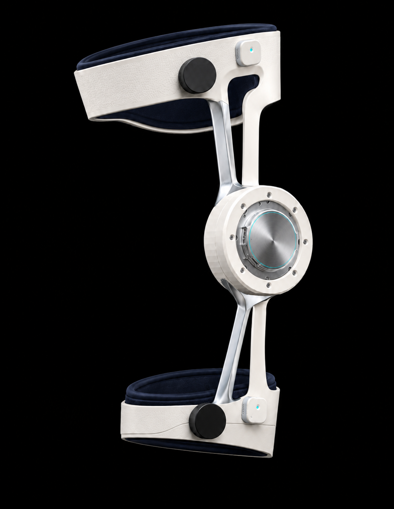
THE PRODUCT
Eyes-free 主动力反馈 膝关节外骨骼
不靠盯屏幕——靠身体感觉，就知道动作对不对。
THE POSITION
让支具「在场」，
替代治疗师必然存在的
「缺席」。
不是替代医生，是补上医生回不去的现场。
THREE LAYERS, ONE GOAL
三层创新，
同一个目标的三种语言。
硬件层
主动力反馈
支具不止「测量」，会「推一下」。 把目标 ROM 与安全边界，做成你能感觉到的阻力。
交互层
多通道反馈
力、触觉、声音、视觉—— 四种语言协同。眼睛不用一直盯屏幕。
体验层
阶段化叙事
早期扶着、中期陪着、后期看着。 系统对你的「态度」会变。
MECHANISM · 01 · THREE-STAGE FRAMEWORK
进阶由标准驱动， 不是由日历驱动。
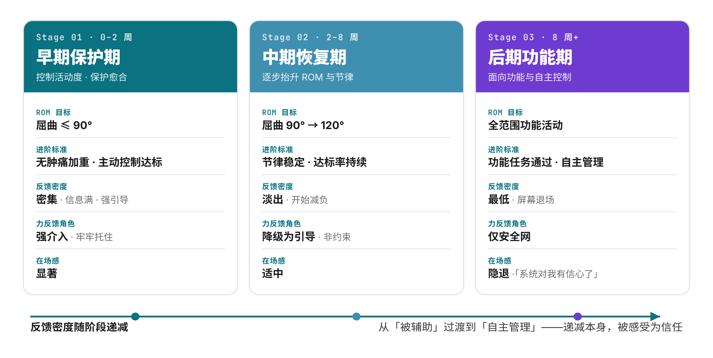
A PERSONA OF STAGES
系统对你的「态度」会变。
STAGE 01 · 早期
扶着把你牢牢托住—— 反馈密集、虚拟墙保守、宁可严不冒进。
STAGE 02 · 中期
陪着在旁边陪着你节奏—— 反馈淡出、力反馈降级为引导。
STAGE 03 · 后期
看着站到一边看你做—— 只在真要越界时保护一下。
这种「态度的变化」本身，被用户感受为信任。
CRITERIA-BASED PROGRESSION
按客观达标进阶， 不按周数。
| 阶段 | ROM 目标 | 反馈密度 | 力反馈角色 |
|---|---|---|---|
|
扶着 · Stage 01
0–2 周 · 早期保护
|
屈曲 ≤ 90° 控制活动度，保护愈合 |
密集 信息满 · 强引导 |
强介入 牢牢托住 |
|
陪着 · Stage 02
2–8 周 · 中期恢复
|
90° → 120° 逐步抬升节律 |
淡出 开始减负 |
引导 不再约束 |
|
看着 · Stage 03
8 周+ · 后期功能
|
全范围功能 功能任务通过 |
最低 屏幕退场 |
仅安全网 自主管理 |
MECHANISM · 02 · VIRTUAL WALL
一面看不见的保护墙。
不是突然锁死—— 先警告，再缓冲，最后保护。
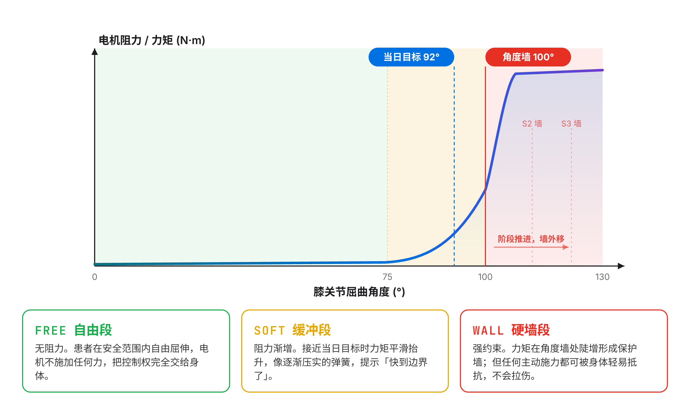
FREE · SOFT · WALL
电机一次推力，三段刚度。
电机不是「卡住」，是把整段角度切成三种刚度——患者能感觉到「自由 → 阻力 → 限位」的渐变。
MECHANISM · 03 · FOUR CHANNELS
力 · 触觉 · 声音 · 视觉——
四种语言，一件事。
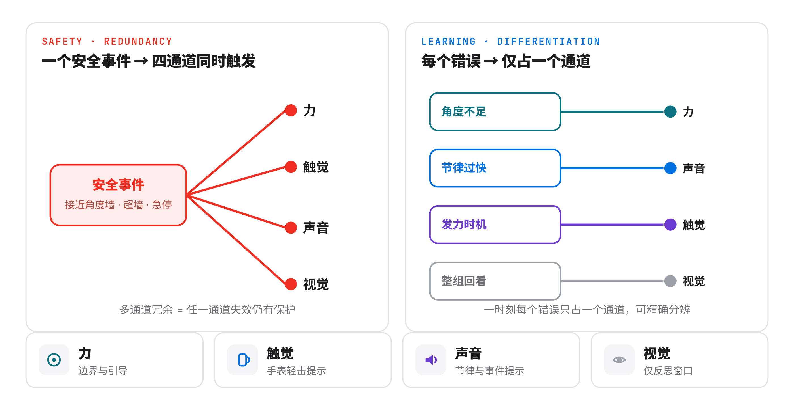
CHANNEL ALLOCATION
安全事件 全开， 学习事件 单开。
不让你为每一个提示分心—— 认知负担也是一种伤害。
SAFETY · 冗余
四通道全开
超角度／异常负载／异常姿态—— 支具推、手表振、屏幕红、声音变。
确保「一定能感觉到」。
LEARNING · 差异化
单通道
速度过快只用力反馈推一下； 角度不够只用声音上扬提醒。
清楚地告诉你「问题在哪」。
MECHANISM · 04 · DEVICE ORCHESTRATION
支具做实时，电脑做决策，
手机管节奏，手表做提示。

LATENCY BUDGET
不是越快越好，
是该快的地方快。
REAL-TIME LOOP
< 50ms支具 ↔ 电脑
控制环路，决定虚拟墙的「触感」。
HAPTIC PULSE
< 500ms→ Apple Watch
离散触觉确认，不需要太快。
REFLECTION
< 2s→ iPhone
组间反思，慢的就该让它慢。
SOFTWARE · A REFLECTION WINDOW
手机不是控制器，
是组间的反思窗口。
训练中
屏幕几乎为空——它知道你在动。
这一刻信息来自支具的阻力、Watch 的振动、声音的升降。手机不打扰。
组间
这一组做了什么、为什么进 / 退。
看 ROM 是否达标、力反馈是否触发；告诉你下一组的阈值在哪里。这是手机存在的全部理由。
阶段
你正在从「扶着」走到「陪着」。
手机解释为什么反馈在淡出、虚拟墙在放宽——让进阶可被理解。
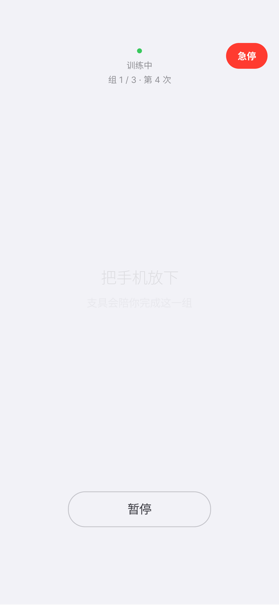
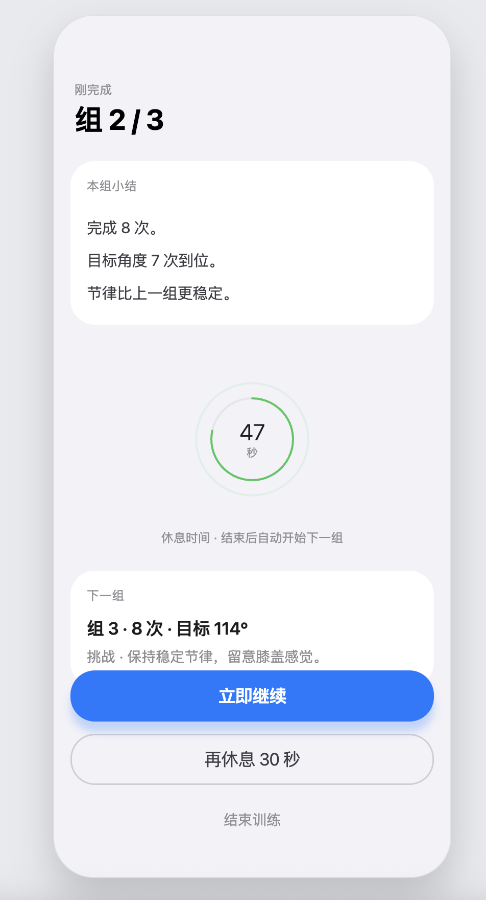
CLINICIAN DASHBOARD
上位机：
参数透明，决策可追溯。
治疗师可以看到每一次训练的虚拟墙曲线、ROM、扭矩—— 知道患者「为什么进、为什么停」。

UNDER THE HOOD
硬件如何把「推一下」做对。
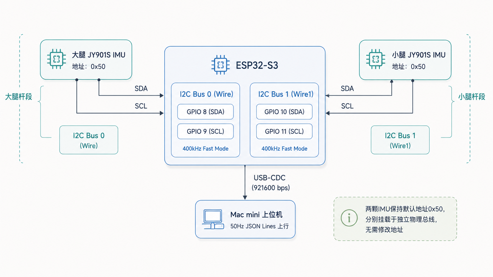
ACTUATOR
Go-M8010-6 电机
紧凑型直驱，可提供主动扭矩，响应快，反向时不卡顿。
SENSING
双 I2C IMU
大腿/小腿姿态融合，得到真实膝关节角度（非简单拉线传感器）。
MCU
ESP32-S3 闭环
片上完成虚拟墙阻力计算，控制周期 < 20 ms。
USER STUDY · SETUP
我们让 10 个人， 用三种配置真实地试了一遍。
CONDITION C1
视觉基线
沿用现有方案：屏幕显示曲线、分数、提示。患者全程看手机。
CONDITION C2a
Eyes-free 早期
力 + 触觉为主、屏幕退场。模拟「扶着」的强反馈配置。
CONDITION C2c
Eyes-free 后期
力反馈降级为安全网。模拟「看着」的弱反馈配置。
每位被试 3.5 小时，包含动作执行（4 项任务）、主观量表（7 分制 ×6 维）与半结构化访谈。
FINDING · 01 · SCREEN GAZE
每组训练，看屏幕次数。
C1 平均 18 次 · C2a 平均 1 次。
眼睛回到了身体上。
FINDING · 02 · BODY AWARENESS
身体觉知评分（7 分制）。
Eyes-free 让被试更清楚自己的膝盖在哪—— 而不是 App 上的曲线在哪。
FINDING · 03 · LONG-TERM INTENT
长期使用意愿（7 分制）。
不是新鲜感—— 是被试觉得「值得长期用下去」。
QUALITATIVE FINDINGS
被试自己说出了
「陪着」 和 「看着」的区别。
P8
「它不是告诉我一个数字——
是让我感觉到，差不多到了。」
P2
「C2a 像有人在旁边说『你到这就行了』；
C2c 像它相信我自己能做。」
P7
「我不觉得它像一个人——
但它有反应，所以没那么像我一个人在做。」
非拟人化的「陪伴感」由系统对身体的实时响应制造——不需要 Avatar、不需要语音鼓励。
CLINIC → ENGINEERING
医生说的话，
怎么变成支具的力。
STEP 01 · 临床共识
按标准进阶
康复指南 (AAOS / 中华骨科) 强调 criteria-based progression—— 以 ROM、疼痛、动作质量达标推进， 而非按周数。
STEP 02 · 设计参数
三阶段 · 七维度
ROM 上限、反馈密度、力反馈刚度、 虚拟墙宽度、提示阈、安全网开关—— 每个阶段一组数。
STEP 03 · 硬件落地
电机扭矩曲线
设计参数翻译成 Go-M8010-6 的扭矩-角度查找表—— 支具就「学会」了医生的判断。
VS THE LANDSCAPE
跟现有产品比，
差异在这四件事上。
| 产品类 | 主动力反馈 | 多通道交互 | 阶段化适应 | 家用可行 |
|---|---|---|---|---|
| 传统康复支具 硬限位 / 弹簧助力 |
— | — | — | ● |
| 智能监测 App Mio Care / 各家 ACL App |
— | 部分 | 弱 | ● |
| 医院康复机器人 EksoNR / Lokomat |
● | ● | ● | — |
| 本系统 Eyes-free 家用主动反馈 |
● | ● | ● | ● |
COMMERCIAL PATH · DUAL TRACK
商业化两条腿：医院 与 居家。
TRACK A · 医疗机构端
治疗师工具
II 类医疗器械方向： 上位机仪表盘 + 多支具集中管理， 走骨科医院 / 康复科 / 三甲门诊。
利润模型：器械销售 + 软件订阅。
TRACK B · 居家端
消费级康复机
3–6 月康复周期租赁套餐， 配合保险/手术后康复包， 通过电商 + 骨科医生分销。
利润模型：押金式租赁 + 内容增值。
CROSS-INDUSTRY VALUE
本系统的核心模块，
可以下沉到外骨骼产业更广的场景。
本系统 / 主动力反馈算法 →
工业助力外骨骼
同样的虚拟墙逻辑可以在物流、建筑场景里提供 「安全限位 + 主动助力」。
本系统 / 多通道协同 →
养老外骨骼
老人需要的不是力——是「不打扰的提醒」。 四通道分级反馈正合适。
本系统 / 阶段化叙事 →
训练 → 辅助 → 放手
任何「学习类」可穿戴设备都需要的范式： 系统对人的态度，会随能力变化。
在「外骨骼从医疗下沉到民用」的产业窗口里，本系统位于核心节点—— 它是少数几个把临床逻辑做进硬件控制环路的方案。
THE DESIGNER'S ROLE
设计师不发明新硬件——
设计师把 临床共识，
翻译成 参数。
这是工业设计在医疗器械产业里能做的事—— 也是其它角色做不来的。
早期强反馈参数族
中期引导参数族
后期安全网参数族
FORM-FINDING SKETCHES
形态来自身体， 不是来自技术堆叠。
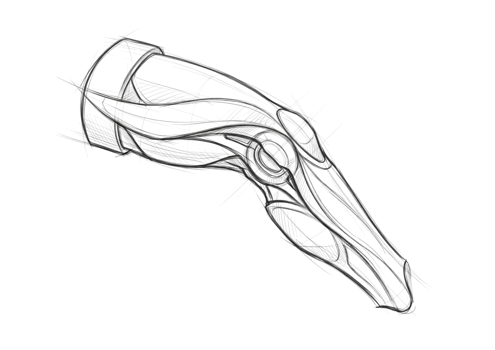
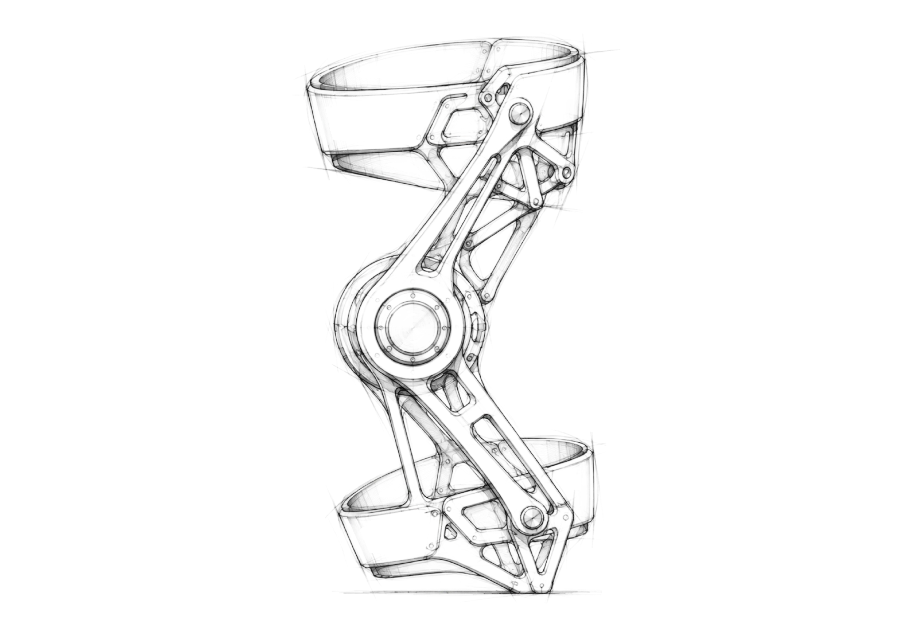
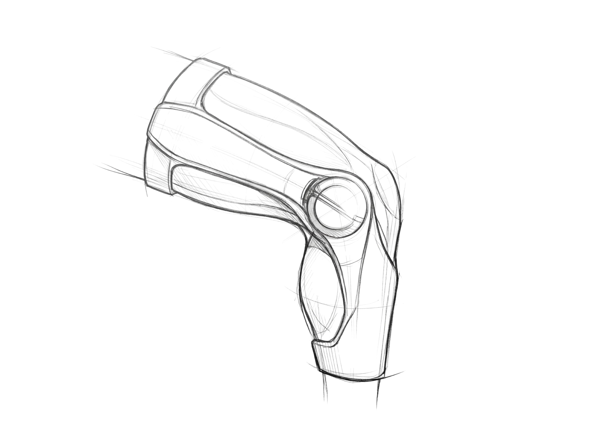
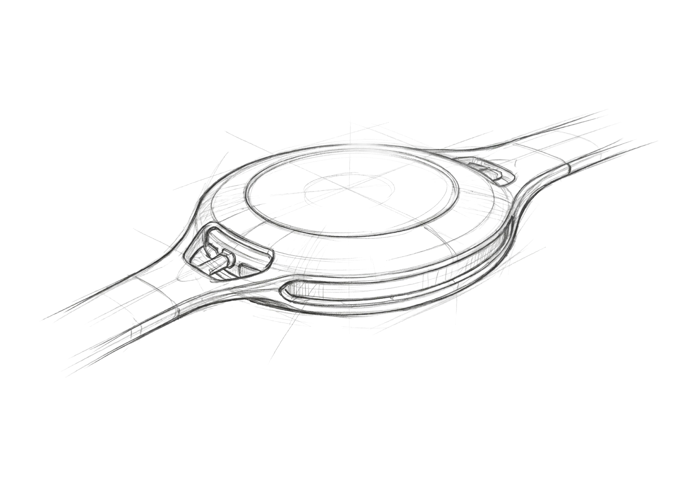
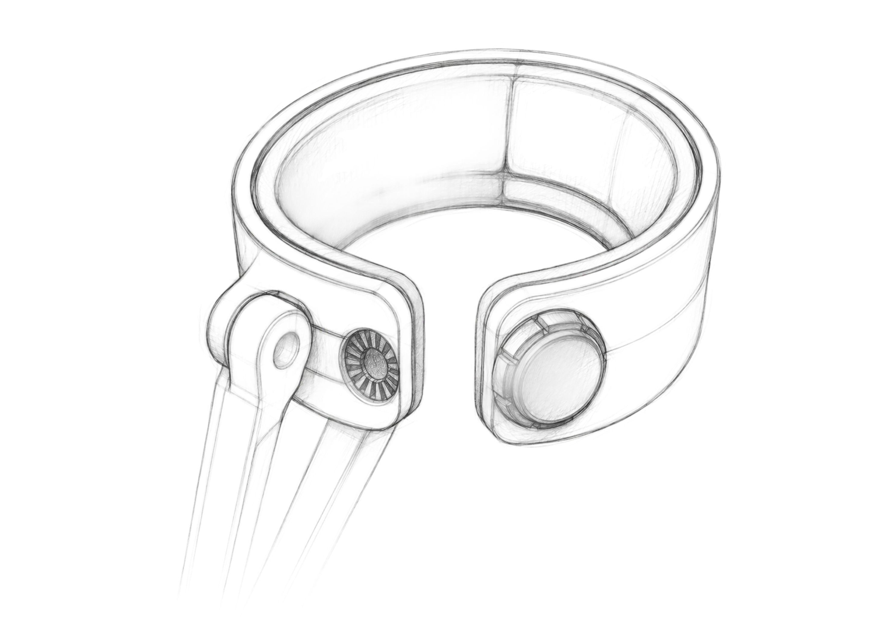
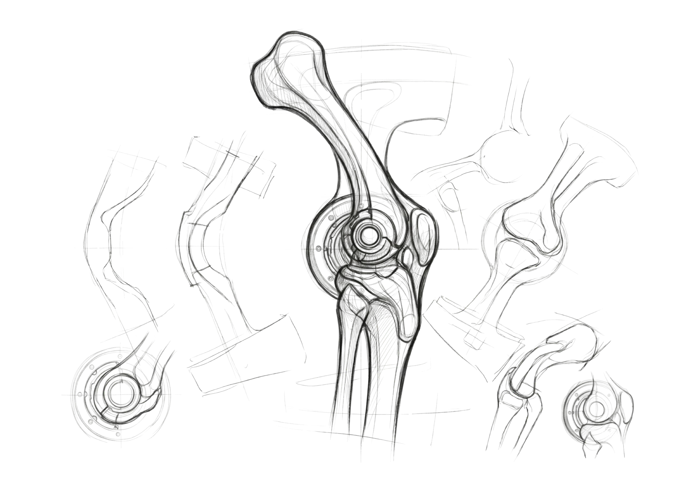
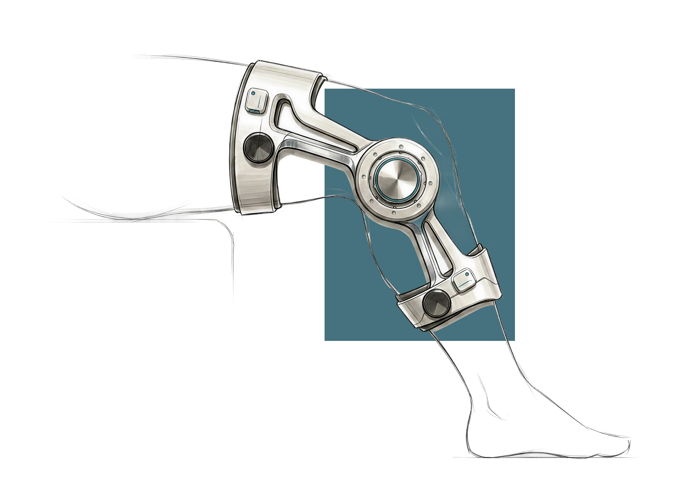
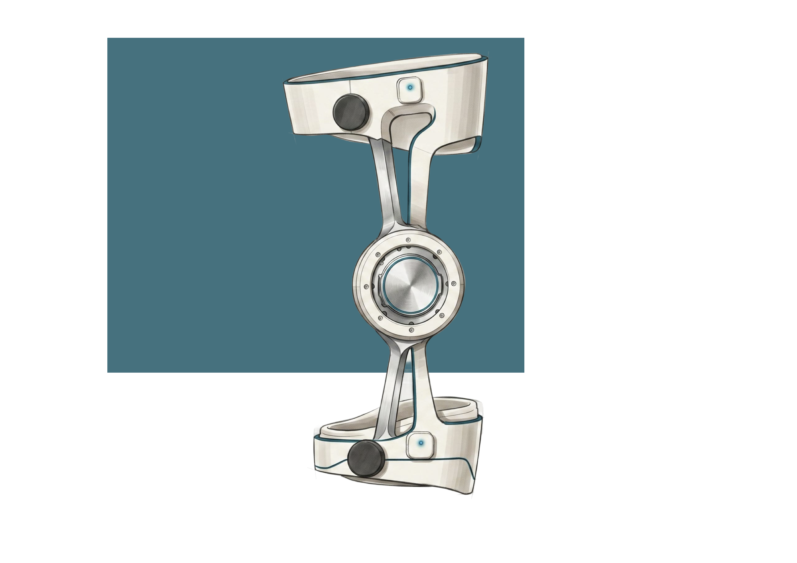
从「先研究身体」到「再决定哪个部位需要骨架」—— 草图把这种推演过程留了下来。
MATERIAL & PROCESS
居家场景的硬约束：
轻量 · 可清洁 · 单手穿脱。
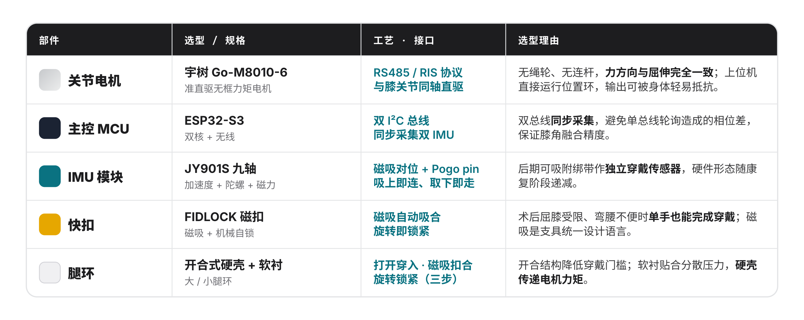
FORCE LINE & ERGONOMICS
力线对齐保证：
长期穿戴不带来二次损伤。
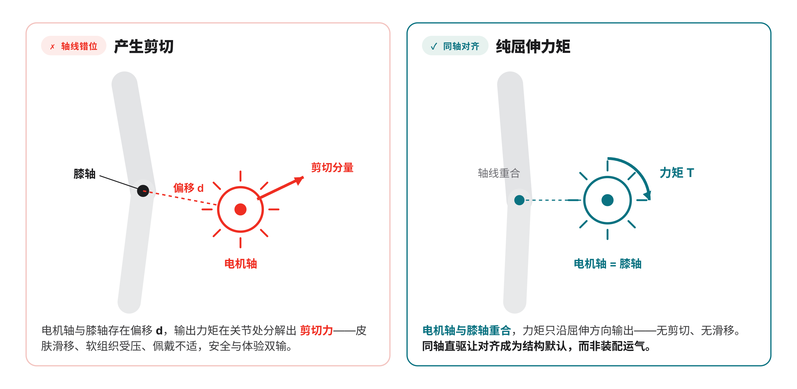
STORYBOARD · USE IN CONTEXT
一次居家训练，六个画面。
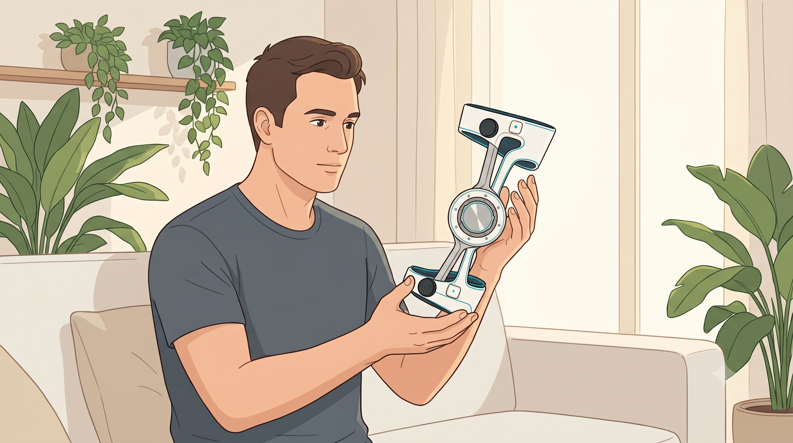
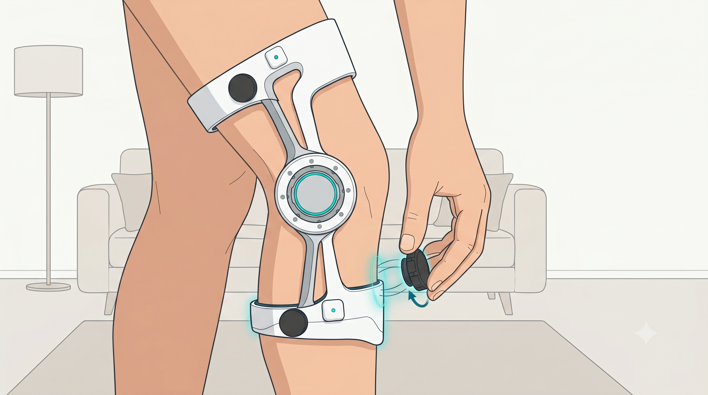
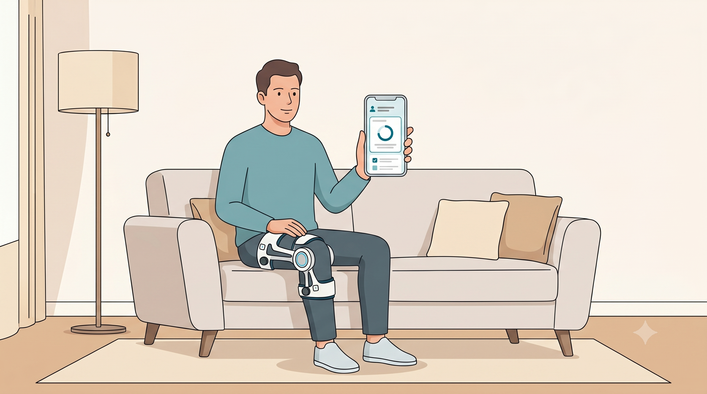
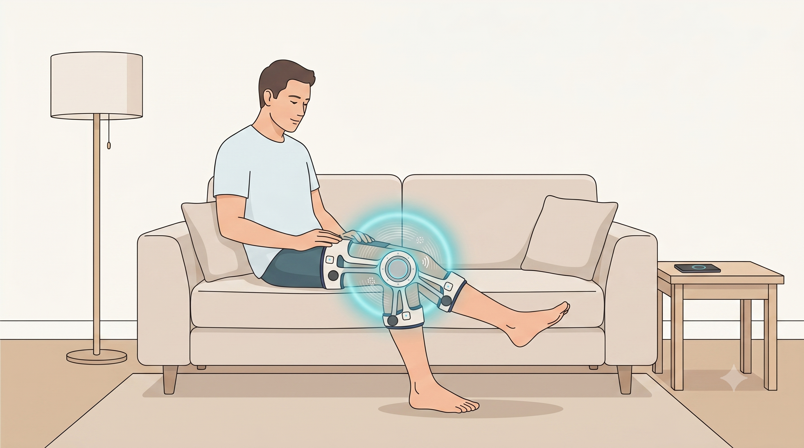
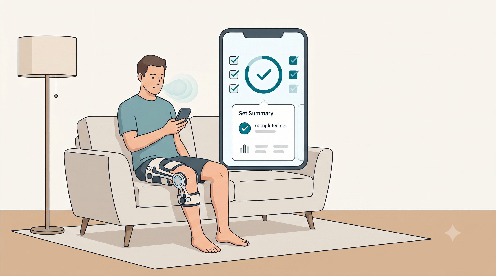
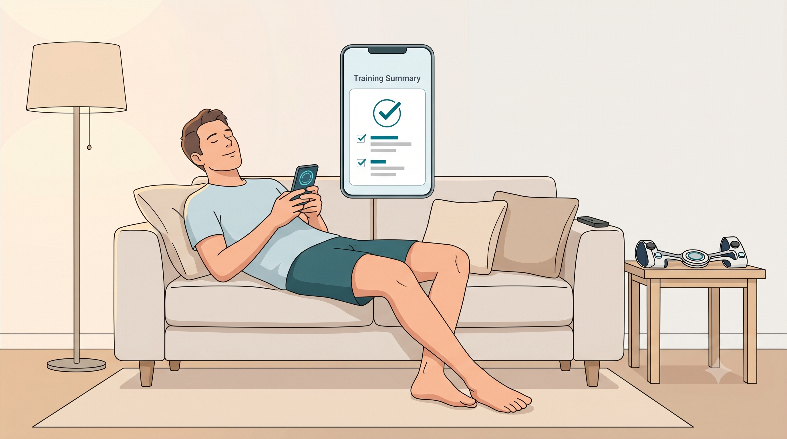
THREE CONTRIBUTIONS
这项毕设带来的三件事。
一种新范式 · 非拟人化的陪伴感
不靠 Avatar、不靠语音鼓励—— 系统对身体的实时响应本身，就是陪伴。
一套工程参数族 · 三阶段 + 虚拟墙 + 四通道
把临床共识转译为硬件可执行参数—— 这一套可被其他外骨骼产品复用。
一份验证证据 · N=10 健康成人
看屏幕次数 18 → 1， 身体觉知与长期使用意愿 4.0 → 6.0。
WHAT'S NEXT
从用户实验，
走到真实患者，
再走到量产。
NEXT · 01
临床伦理审查
在合作骨科医院申请伦理委员会立项，确立 ACL 术后患者纵向研究的 protocol。
NEXT · 02
纵向临床试验
招募 ACL 术后 1–6 月患者 n=24，对比本系统与传统居家康复在依从性与 ROM 上的差异。
NEXT · 03
医疗器械备案 + 量产
II 类医疗器械注册路径； 硬件 BOM 控制在消费级价格区间， 走「医院共用 + 居家租赁」双轨。
END OF PRESENTATION
谢谢 · Thank you.
欢迎评委老师指正。
指导老师
张娟
临床顾问
北医三院康复科
受访患者
10 位 ACL 术后被试
王盛逸 · 艺术设计学院 · 工业设计 · 2026